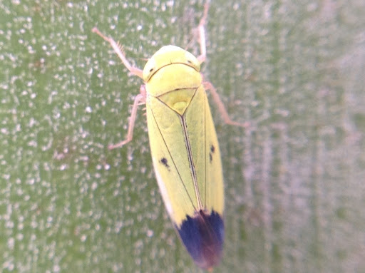
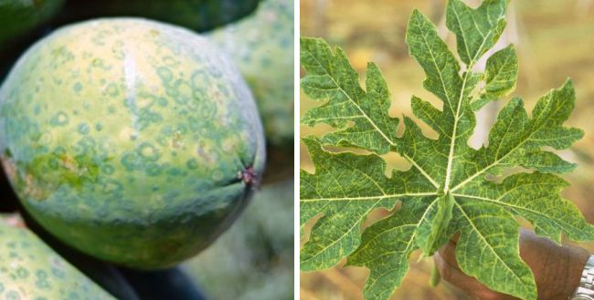

Setelah membahas tentang macam macam hama, selanjutnya kamu bisa melanjutkan ke penyakit tanaman dalam pembahasan hama dan penyakit tanaman ini. Penyakit pada tumbuhan umumnya disebabkan oleh mikroorganisme berupa virus, bakteri dan jamur. Tumbuhan yang terserang penyakit akan mengalami hambatan dalam pertumbuhan dan perkembangannya, bahkan terkadang terdapat pula yang mengalami pertumbuhan tidak normal. Akan tetapi, penyakit yang menyerang tumbuhan tidak hanya diserang oleh mikroorganisme saja, melainkan juga dikarenakan kekurangan unsur hara atau unsur tanah lainnya. Jadi terdapat banyak faktor yang menyebabkan penyakit tanaman. Berikut beberapa penyakit tanaman yang sering ditemui:
Penyakit Tungro
Salah satu hama dan penyakit tanaman yang paling sering terjadi, terutama pada tanaman padi adalah penyakt tungro. Penyakit ini menyebabkan produksi padi nasional kehilangan hasil yang cukup tinggi. Penyakit Tungro disebabkan oleh dua jenis virus yaitu, Rice Tungro Bacilliform Virus dan Rice Tungro Spherical Virus. Kedua jenis virus ini bisa menginfeksi tanaman secara bersamaan karena tidak memiliki kekerabatan serologi. Virus tungro juga bisa ditularkan oleh wereng. Kamu bisa melihat tanaman yang terkena penyakit tungro dengan melihat beberapa gejala seperti muncul seminggu sesudah inokulasi, adanya diskolorasi berwarna kuning, dan adanya klorisi pada daun. Bila kamu menemukan hal-hal tersebut pada padi, maka akan mempengaruhi hasil panen.
Penyakit Mosaik
Penyakit mosaik merupakan penyakit yang sering menyerang tanaman tembakau. Penyakit ini disebabkan oleh virus yang bernama Tobacco Mosaic Virus atau sering disingkat sebagai TMV. Adapun gejala tanaman yang terserang penyakit ini adalah pada daunnya terdapat bercak hijau muda atau kuning yang tersebar, apabila semainya terinfeksi maka tidak lama kemudian semai tersebut akan mati, ukuran buahnya menjadi kecil, pada batangnya terdapat garis hitam yang menandakan bahwa terdapat jaringan yang mati. Selain kedua penyakit tersebut, ada beberapa penyakit tanaman yang juga cukup sering ditemui, yaitu Penyakit Embun Tepung, Penyakit Layu Cabai, Penyakit Hawar Daun Kentang, Penyakit Daun Berlubang, Penyakit Semai Roboh, Penyakit VSD (Vascular Streak Diaback) hingga Penyakit Bubuk Coklat.